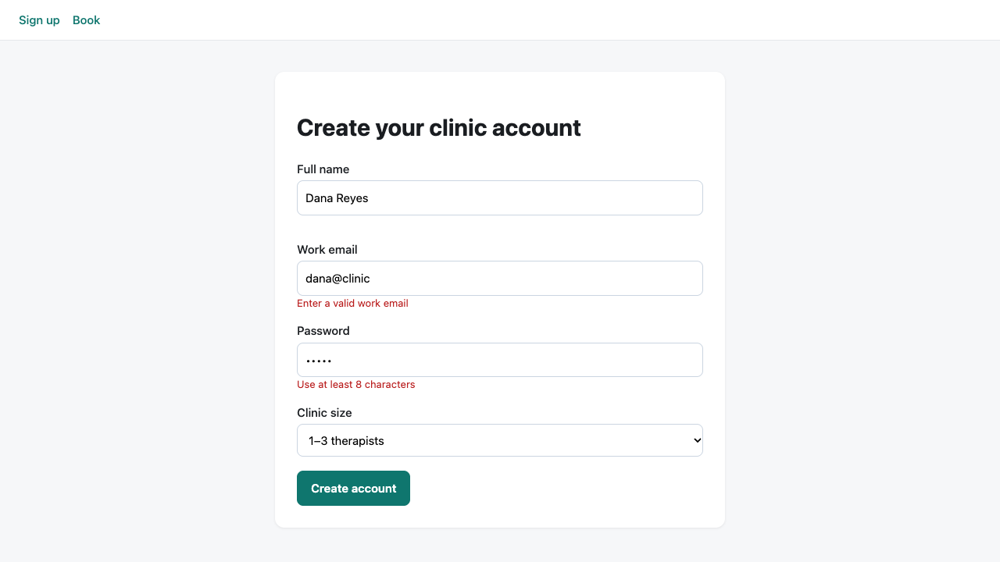
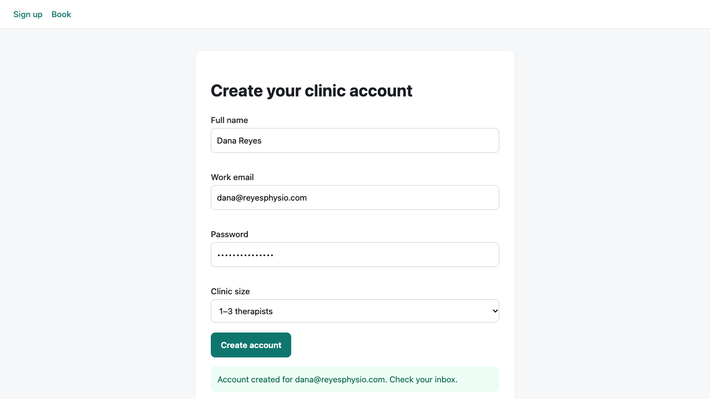

Output


Result
browser-1 (signup flow)
Submitting "dana@clinic" with a 5-character password: the form stays put, the inline errors "Enter a valid work email" and "Use at least 8 characters" appear, the name error is empty and no success box is rendered. Submitting dana@reyesphysio.com with a valid password: all three error slots are cleared and a role=status box reads "Account created for dana@reyesphysio.com. Check your inbox." Network log shows no request other than the page load, so signup is purely client-side: nothing is sent to a server, the "account" is never persisted.
Tool: dev-browser. The SKILL.md describes the Puppeteer-based 1.0 API (page.snapshot, ref/eN, waitForLoad), but `npm i dev-browser` installed 0.2.9 (the old Playwright/QuickJS version: its daemon asked for "dev-browser install" and has no snapshot API). I installed the `next` tag instead (1.0.0-rc.4), which matches the skill; it reused the system Chrome. Followed the skill: read `dev-browser --help` first, named pages, snapshot -> act by ref -> verify with the cheapest check, end scripts with semicolons, headless via --headless. Server: python3 -m http.server on port 7113 (my range was 7111-7130), killed afterwards; `dev-browser stop` ended the daemon.
Notes: incremental snapshots (track) only showed interactive-element changes, so the inline error text was verified with $$eval instead. dev-browser prints page console errors and uncaught exceptions at the end of every script on its own ("[page:book] uncaught: ...") which made the browser-2 root cause visible with no extra code. Screenshots go to ~/.dev-browser/v1/tmp and were copied from there.
Terminal
# latest tag is the old API; the skill's snapshot/ref API is not there
npm i dev-browser && dev-browser --help
dev-browser 0.2.9 ... Scripts run in a sandboxed QuickJS runtime ... 'Embedded daemon dependencies are missing. Run `dev-browser install` first.'
# this version matches the SKILL.md
npm i dev-browser@next && dev-browser --help && dev-browser install
dev-browser 1.0.0-rc.4 — browser automation CLI for coding agents (Puppeteer scripts, named pages, snapshot refs)
...
Chrome already available (system): /Applications/Google Chrome.app/Contents/MacOS/Google Chrome
# look
dev-browser --headless -t 20 <<'EOF'
const page = await browser.getPage("signup");
await page.goto("http://localhost:7113/index.html");
await page.snapshot({ interactive: true, track: "s" }).then(s => s.full)
EOF
- main [ref=e5]:
- heading "Create your clinic account" [level=1] [ref=e6]
- textbox "Full name" [ref=e9]
- textbox "Work email" [ref=e12]
- textbox "Password" [ref=e15]
- combobox "Clinic size" [ref=e18]
- button "Create account" [ref=e19]
# browser-1, invalid; the incremental diff only covers interactive nodes, so errors were read with $$eval
dev-browser --headless -t 20 <<'EOF' # fill ref/e9, ref/e12 'dana@clinic', ref/e15 'short', click ref/e19, waitForSelector, incremental snapshot, shot, read .err texts
EOF
[image] ~/.dev-browser/v1/tmp/browser-1-invalid.png (1280x720)
- - textbox "Full name" [ref=e9]
+ - textbox "Full name" [ref=e9]: Dana Reyes
+ - textbox "Work email" [ref=e12]: dana@clinic
{ "errors": ["e-name: ", "e-email: Enter a valid work email", "e-pw: Use at least 8 characters"], "successBoxes": 0 }
# browser-1, valid: the named page 'signup' persisted between runs, no re-navigation
dev-browser --headless -t 20 <<'EOF' # same named page: fill valid email/password, click, wait for .ok, shot
EOF
{ "errors": ["e-name: \"\"", "e-email: \"\"", "e-pw: \"\""], "success": "Account created for dana@reyesphysio.com. Check your inbox." }
# cleanup; no listeners left in my port range
dev-browser stop; pkill -f 'http.server 7113'; lsof -nP -iTCP:7111-7130 -sTCP:LISTEN
stopped 1 browser(s) and the daemon
Files
browser-2 script (as run)
const page = await browser.getPage(class="s">"book"); await page.goto(class="s">"http://localhost:7113/index.html#book"); await page.waitForSelector(class="s">"#book", { visible: true, timeout: 3000 }); console.log(await page.snapshot({ interactive: true })); const reqs = []; page.on(class="s">"request", r => { if (r.url().includes(class="s">"/api/")) reqs.push(r.method() + class="s">" " + r.url()); }); await page.click(class="s">"#book"); await new Promise(r => setTimeout(r, 600)); const shot = await page.shot({ name: class="s">"browser-2-click.png" }); ({ requestsFired: reqs, resultHtml: await page.$eval(class="s">"#result", e => e.innerHTML), selectedVar: await page.evaluate(() => typeof selected), highlighted: await page.$eval(class="s">".slot.sel", e => e.textContent), shot: shot.path })